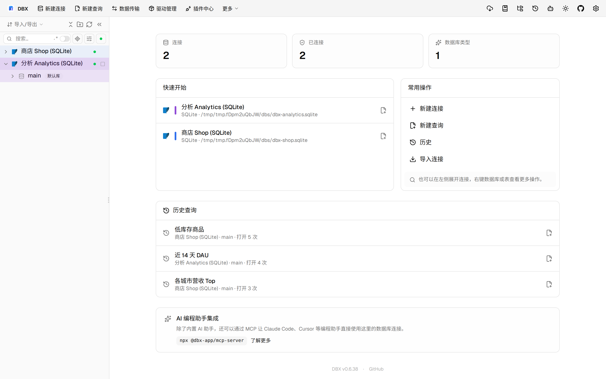
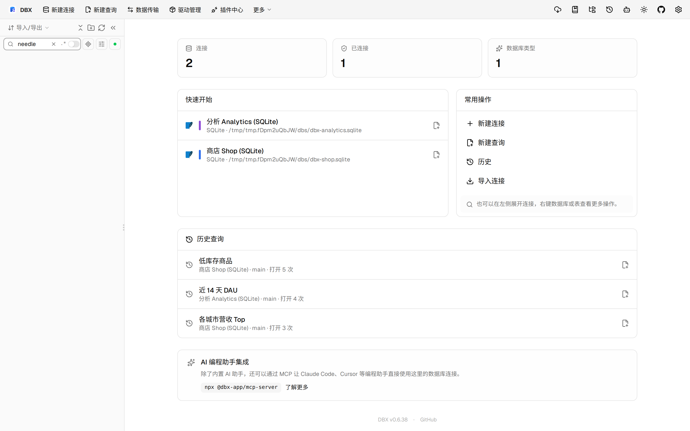

#11483 界面预览
commit 7b13875 · 回到 PR · 这个 PR 为 OceanBase Oracle 的对象列表和侧栏对象树引入了条件分页加载：按名称/注释/类型在 Agent 侧做有界分页，保持数据库顺序，并在对象浏览器底部提供“加载更多”；同时搜索中使用正则会直接提示不支持。
⚠️ 这次录制有 9 步没能按计划执行；带 ⚠️ 的截图拍摄于步骤失败之后，画面未必是说明文字所描述的状态。
红线是鼠标走过的轨迹，红色圆环是一次点击；底部文字是这一步在做什么。多个场景各自从应用初始状态开始。空格暂停，← → 逐段查看。

⚠️ 对象浏览器分页与继续加载 · 打开对象浏览器后的列表区域
 ⚠️ 对象浏览器分页与继续加载 · 对象浏览器按搜索条件分页后的列表与底部提示
⚠️ 对象浏览器分页与继续加载 · 对象浏览器按搜索条件分页后的列表与底部提示
 ⚠️ 对象浏览器分页与继续加载 · 继续加载后的对象列表与分页按钮状态
⚠️ 侧栏对象树分页 · 对象树/侧栏中的分页加载位置
⚠️ 对象浏览器分页与继续加载 · 继续加载后的对象列表与分页按钮状态
⚠️ 侧栏对象树分页 · 对象树/侧栏中的分页加载位置

⚠️ 侧栏对象树分页 · 侧栏搜索结果里保留分页继续加载节点